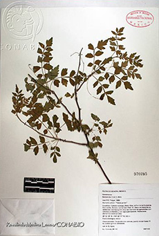
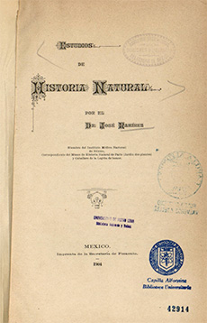

Referencias
- Flores, O.H. y H. Ochoterena. 1991. José Ramírez (1852-1904), vida y obra. Cuadernos 11. Instituto de Biología, UNAM. 102 p.
- Morales, S.R. 2010. El naturalista José Ramírez: un análisis de su obra científica (1879-1904). Tesis Doctorado en Historia, UNAM. 295 p.
José Ramírez
1852 - 1904
José Ramírez fue un médico que dedicó gran parte de su vida al desarrollo de la botánica en México. Nació en la ciudad de México en 1852 y falleció en 1904. Su padre fue Ignacio Ramírez “El Nigromante”, destacado escritor, poeta, abogado y político.
Después de concluir sus estudios en la Escuela Nacional Preparatoria en 1898 ingresó a la Escuela Nacional de Medicina de la cual se tituló con el trabajo “Estudio sobre la fiebre puerperal” en 1875. También estudió en el Instituto Pasteur en Francia donde aprendió los últimos adelantos en bacteriología.
Su labor profesional comenzó como preparador y conservador del Museo de Anatomía Patológica de la Escuela Nacional de Medicina. A partir de este momento, a pesar de haber estudiado medicina se abocó a la zoología, botánica y a los sistemas de clasificación de los seres vivos.
Fue preparador de la clase de Historia Natural en la Escuela Nacional de Agricultura y Veterinaria y profesor de Historia Natural en el Museo Nacional. Más tarde fue nombrado profesor del Instituto Médico Nacional, lugar donde desarrolló gran parte de su obra y del cual fue uno de sus fundadores. Se desempeñó también como secretario del Consejo Superior de Salubridad, por lo que fue representante del gobierno mexicano en una diversidad de reuniones.
Dentro del Instituto Médico se encargó de la clasificación y descripción de los ejemplares que ingresaban a éste. Asimismo, se ocupó de incrementar el acervo del herbario de dicho instituto.
Escribió numerosos trabajos, uno de ellos Introducción para una flora del Valle de México (1898) que sirvió como instrumento para identificar las diferentes especies vegetales que crecen en esta parte de la República Mexicana. Fue coautor de La lista de nombres vulgares y botánicos de árboles y arbustos propios para repoblar los bosques de la República (1894), obra que compila el conocimiento de varias plantas, incluye sus nombres vulgares y científicos, la manera en que crecen así como el clima donde habitan. Y finalmente, su libro póstumo Estudios de historia natural (1904), recoge gran parte de su labor científica que había sido publicada en memorias, lecturas en turno o informes de trabajo.
Mis favoritos
- 
- Bursera laxiflora Wats / Burseráceas / Copal. Torote prieto
- Sinonimia vulgar y científica de las plantas mexicanas. BHL Collections
- Foto: Rosalinda Medina Lemos / Banco de imágenes, CONABIO
Mis lugares
Mis ideas
- 
- Estudios de Historia Natural por José Ramírez. 1904
- Fuente: Colección digital, Universidad Autónoma de Nuevo León